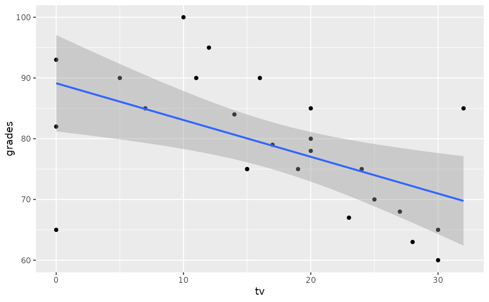

R/data-gradestv.R
gradestv.RdThis is a simulated data set to be used to estimate the relationship between number of hours per week students watch TV and the grade they got in a statistics class.
gradestv
A data frame with 25 observations on the following 2 variables.
Number of hours per week students watch TV.
Grades students got in a statistics class (out of 100).
Simulated data
There are a few potential outliers in this data set. When analyzing the data one should consider how (if at all) these outliers may affect the estimates of correlation coefficient and regression parameters.
library(ggplot2) ggplot(gradestv, aes(x = tv, y = grades)) + geom_point() + geom_smooth(method = "lm")#>